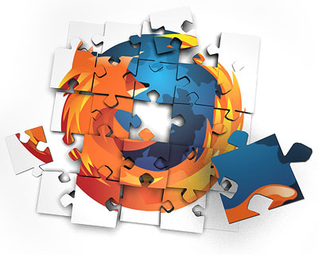

mâzgăliturile mele despre orice
Suplimente (add-ons) recomandate pentru Firefox
Titlul nu prea corespunde cu cea ce este scris în acest articol. Nu pot spune că recomand anumite suplimente (add-ons) pentru navigatorul Mozilla Firefox, dar în lista de mai jos am trecut suplimentele pe care le folosesc eu.
Cu timpul am folosit multe suplimente, pe unele le-am mai înlocuit și cu timpul am ajuns să nu le mai folosesc, oricum nu o să le trec în listă. Cred că sunt de ajuns suplimentele pe care le folosesc eu pentru oricine are nevoie de un pic de intimitate și de siguranță restul sunt pentru nevoile zilnice.
Lista cu suplimente (add-ons):
- Greasemonkey http://www.greasespot.net/ & https://addons.mozilla.org/en-US/firefox/addon/greasemonkey/
- HTTPS-Everywhere https://www.eff.org/https-everywhere & https://addons.mozilla.org/en-US/firefox/addon/https-everywhere/
- Privacy Badger https://www.eff.org/privacybadger & https://addons.mozilla.org/en-US/firefox/addon/privacy-badger-firefox/
- Search By Image (by Google) https://addons.mozilla.org/en-US/firefox/addon/google-similar-images/
- YouTube High Definition http://barisderin.com/?p=1113 & https://addons.mozilla.org/en-US/firefox/addon/youtube-high-definition/
Acestea sunt suplimentele pe care le folosesc eu și pentru mine sunt suficiente, nu știu dacă or să fie și pentru voi.
Pentru un minim de intimitate și siguranță vă recomand suplimentele HTTPS-Everywhere și Privacy Badger, și pe lângă acestea mai puteți instala cea ce considerați voi că este necesar.